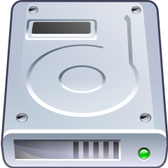
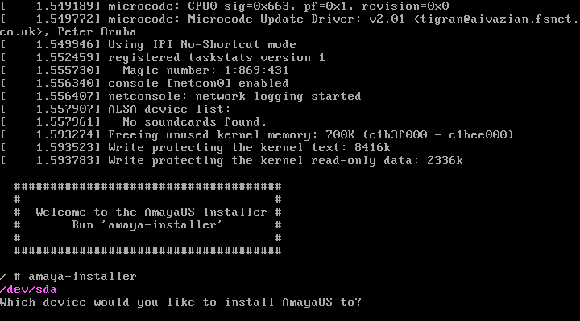

Guía de instalación
¡Bienvenido a la guía de instalación de AmayaOS! Este documento te ayudará a instalar AmayaOS en tu disco duro paso por paso en tan solo unos minutos.

Obtener AmayaOS
Lo primero de todo es obtener una copia de la imagen de instalación de AmayaOS, para ello podemos descargar alguna de las imágenes precompiladas o compilar el código fuente de la imagen de instalación (solo para usuarios avanzados). A continuación debemos grabar la imagen ISO en un CD(DVD), en un USB o emularla en una máquina virtual.
Ejecutando la Imagen de Instalación
Debemos arrancar nuestro PC con el CD o USB insertado y con la secuencia de "boot" configurada correctamente. En caso de usar una máquina virtual debemos haber cargado la imagen ISO y haber creado un disco duro virtual para la misma (Esto puede variar dependiendo del emulador que utilicemos). Si todo está correcto deberíamos obtener una pantalla como la siguiente:

Ejecutando el instalador
Tal y como nos informa la pantalla anterior tenemos que ejecutar el instalador escribiendo "amaya-installer" en la terminal. Una vez hayamos pulsado 'ENTER' nos aparecerá la siguiente pantalla preguntándonos en que disco duro o partición queremos instalar AmayaOS:

Introducimos "/dev/sda" y pulsamos 'ENTER'. El instalador nos preguntará entonces si estamos seguros de instalar en esa partición/disco, ya que se perderán todos los datos que existan en el mismo durante la instalación. Le decimos que Si introduciendo "y" ("n" para cancelar la instalación) y en cuestión de unos segundos tendremos AmayaOS instalado en nuestro disco duro.

Una vez instalado el sistema simplemente introducimos "poweroff" o "reboot", para apagar y reiniciar respectivamente, extraemos el CD o USB (o en su defecto cambiamos el orden de arranque en nuestra BIOS para que tenga preferencia el disco duro) y nuestro ordenador o máquina virtual arrancará con AmayaOS.